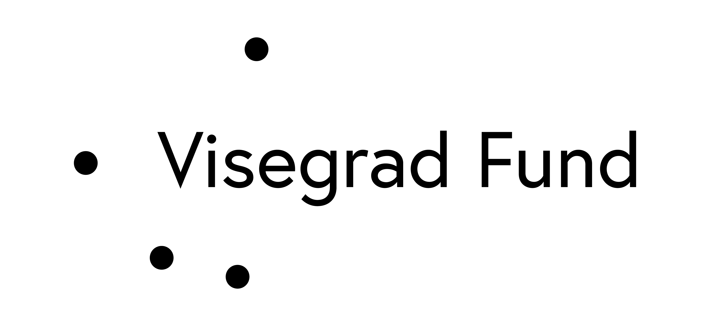

Keynote lectures
Four invited keynotes framing the state of AI methodology in computer vision and large language models.
V4·AIM convenes researchers from the Czech Republic, Slovakia, Poland, and Hungary around shared AI methods for computer vision and large language models, across disciplines that rarely meet in the same room.
Shared AI methods for computer vision and LLMs, across V4 research disciplines.
Four invited keynotes framing the state of AI methodology in computer vision and large language models.
Sessions led by V4 partner institutions. Method-centric, with room for disciplinary cross-talk.
Working sessions using the Metacentrum HPC infrastructure. CV annotation pipelines and LLM prompting workflows.
Structured time for doctoral and advanced Master's students to present in progress work and meet peers.
The exact call-for-participation dates are being finalized with partner institutions. Leave an email and we'll send you the opening date and application form. Nothing else.
Announced through partner university mailing lists and professional networks across the V4 region.
Applicants submit a short statement on how AI methodology intersects their current research.
Selection balances disciplinary breadth, career stage, and geographic representation across V4.
Selected participants from partner countries have travel and lodging at the venue covered by the grant.
Univerzita Karlova / Charles University
Ovocný trh 560/5
116 36 Prague, Czech Republic
Mgr. et Mgr. Petr Chlup, repository and code.
chlupp@natur.cuni.cz
Zuzana Pavlíková, project manager, International Visegrad Fund.
pavlikova@visegradfund.org

V4·AIM is co-financed by the governments of Czechia, Hungary, Poland, and Slovakia through Visegrad Grants from the International Visegrad Fund. The mission of the fund is to advance ideas for sustainable regional cooperation in Central Europe.